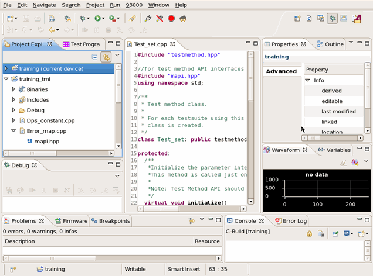

Debug perspective
The Debug Perspective contains the views to debug a test method.

For more information on available perspectives and how you can customize a perspective, see Perspectives.
This perspective contains the following views:
- Project Explorer
It shows the test method projects and devices in the current workspace. It allows easy navigation to the desired program code. You can create a new test method project and class from this view. You can create a new test method project and class from the view.
- Test Program Explorer
It shows all the device setup tools like Pin Configuration Tool, Level Setup Tool, Pattern Tool etc.
- Editor
This view can have multiple editors. The editors are stacked in the editor tabbed pane and individual editors can be activated by clicking the tab for the editor.
The editor has specialized features for editing and debugging test method programs. Hence, you can edit and debug your test method programs in one editor.
On debugging, this editor operates as the debugger's source viewer. You can set the breakpoints in this editor and debug your test application with the Console, Variables, Expressions, Breakpoints, and Waveform views quickly and efficiently.
- Problems
This view shows errors or warnings and the locations of them in the list form. If you double-click an error in the list, the cursor moves to the line with the error in the editor.
- Firmware
This view allows entering and executing firmware commands during debugging.
- Breakpoints
This view lists all breakpoints that you set.
- Console
This view shows the output of the execution of your program and enables you to enter input for the program.
- Error Log
It shows all the errors coming from the test system and from the Eclipse plug-ins.
- Waveform
This view shows the contents of an array selected in the editor graphically. You can graphically view the captured wave form or calculated results. You can open the Signal Analyzer tool from here for more analysis if necessary.
- Variables
This view shows values of variables in the executed test method.
- Debug
This view shows the process of the test method executions and debugging. You can control the test method execution here.
- Properties
This view shows the properties of an object that you are highlighting. For example, the location and modified date of a test method project (depending on the context, for examples, see Testflow Properties view or Pattern editor properties view).
Functional changes
- Introduced before SmarTest 6.3.2